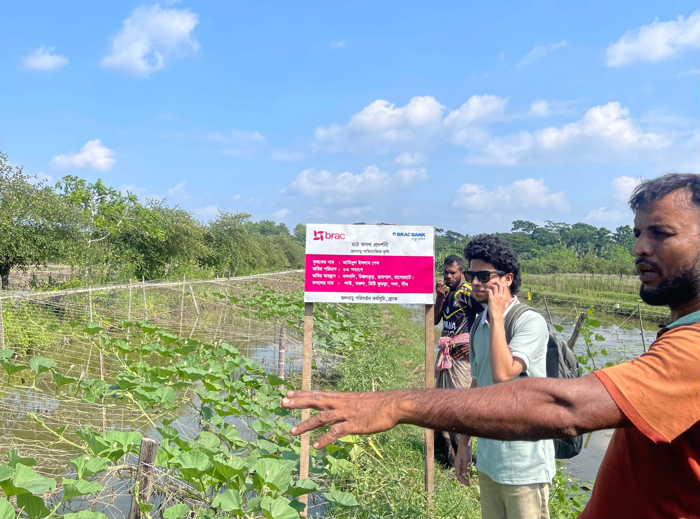
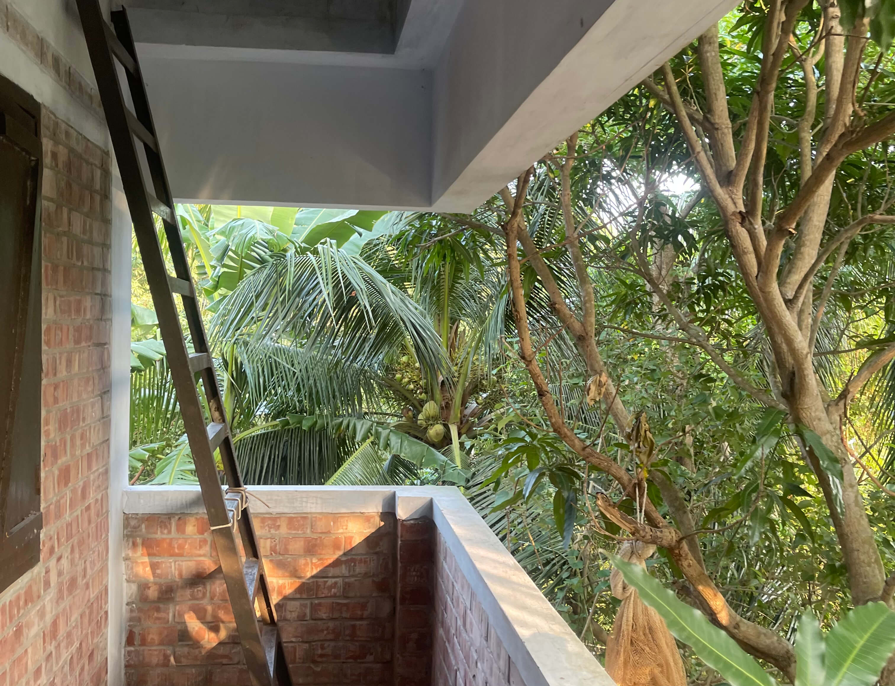

Pink Tanks and Green Futures: Balance Between Institutional and Public Participation in BRAC’s Climate Change Program
My visit to BRAC's Climate Change Program in Mongla showed me how lasting change emerges when institutions and communities work hand in hand. From natural composting farms to disaster-safe homes with pink rainwater tanks, I witnessed how support and self-reliance can grow together to build resilient futures.

A persistent question has intrigued me to a great extent, whether institutional (NGOs/governments) efforts alone can uplift a community or nation. This question has been taking up more space in my thoughts recently as I started my very own initiative that works on making STEM education more accessible to the greater Bengali-speaking community within Bangladesh and outside. I was fortunate to find BRAC’s Climate Change Program (CCP) among some very interesting organizations at my campus for an event (The Way) in our Multipurpose Hall. They were able to address this quite elegantly.
I had the privilege of visiting BRAC CCP in Mongla on the 3rd of this month. From BRAC Center at Mohakhali to Mongla, accompanied by some interesting individuals, I had quite the journey witnessing change, progress and the answers to my questions.

We met Muhammad Zakaria, a farmer working on a natural compost producing technique, assisted by BRAC CCP. He was quite happy being able to use what he learned and produce crops without relying on any expensive fertilizers. BRAC’s CCP funded and helped him set up the initial system required and monitor it. The goal, as explained by one of the CCP representatives, is to have most of the farmers in the area switch to this method following Zakaria’s success. This very formula has been applied to rest of the initiatives we have visited including “Amar Bon (My forest)”, their mixed cultivation of saline-resistant vegetables above shrimp/fish in shallow waters and several others. The idea of helping a select few interested farmers and building success stories and then getting them to propagate the method to others is a pretty effective way of uplifting communities with a balanced blend of institutional support and community engagement.
Another initiative that we visited at the end of our visit, unified neighborhoods through a different approach. During natural disasters in coastal areas people are reluctant to leave their homes & livestock behind to move to a shelter as traditionally government provided shelters can be quite far and hold more people. BRAC CCP’s approach really helps strengthen community bonds and trust. It’s one elevated disaster-safe building where 10 families in a neighborhood can take shelter, get access to clean, stored rainwater (in pink tanks!); the house bears the names of families who can take shelter there.

I like the balance of organizational support and community engagement in these efforts to uplift communities vulnerable to climate change. And what I understand is that the role of an organization working for the betterment of a community is not spoon-feeding the people but uplifting them like a responsible parent so they may accomplish things on their own. The trip brought me hope and a sense of responsibility to apply what I learned in my efforts.